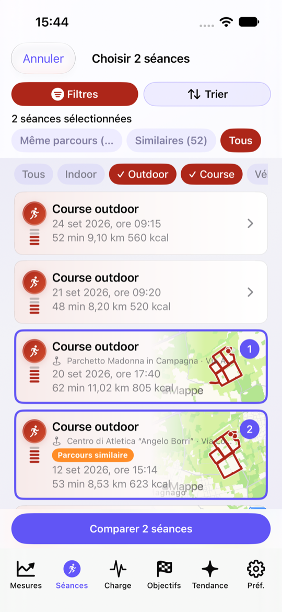
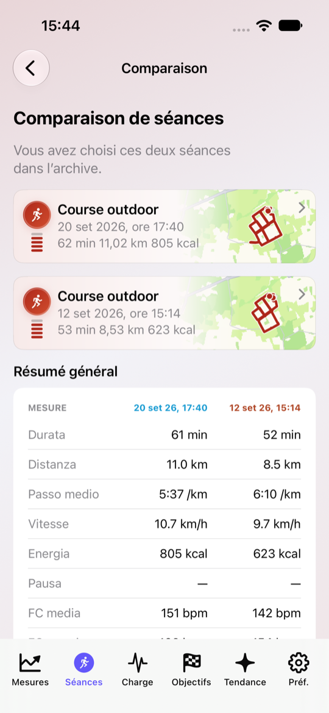
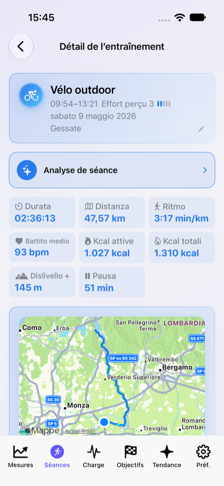
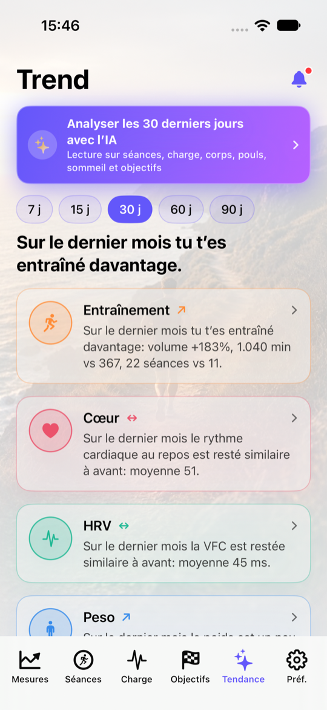

Tendances et analyse
Fenêtres de 15–90 jours sur activité, cardio, sommeil et composition — en langage simple.
iOS · Apple Santé · HealthKit
LifeNex
Transformez les données déjà dans Apple Santé en tendances claires : séances, charge, composition et objectifs — sans diagnostic ni plan clinique.
Il observe vos données, explique les tendances et vous motive vers les objectifs que vous choisissez.
Fenêtres de 15–90 jours sur activité, cardio, sommeil et composition — en langage simple.
Historique d’entraînement, zones FC, cartes et évolution de la charge dans le temps.
Lectures intelligentes uniquement avec consentement, à partir de résumés déjà calculés sur l’iPhone.
Huit écrans clés : ce que vous voyez et ce que vous pouvez faire.




LifeNex observe, explique et motive. Ce n’est pas une app médicale.
Aller sur l’App Store